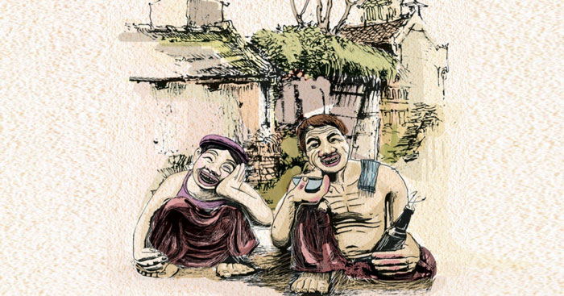

Thông tin tác phẩm
- Tác giả Nam Cao
- Năm sáng tác 1941
- Thể loại Truyện ngắn hiện thực
- Ngôn ngữ Tiếng Việt

“Không được! Ai cho tao lương thiện?
Làm thế nào cho mất được những vết mảnh chai trên mặt này?”
“– Tao muốn làm người lương thiện!
Bá Kiến cười ha hả:
– Ồ tưởng gì! Tôi chỉ cần anh lương thiện cho thiên hạ nhờ.
Hắn lắc đầu:
– Không được! Ai cho tao lương thiện? Làm thế nào cho mất được
những vết mảnh chai trên mặt này? Tao không thể là người lương thiện nữa...
Hắn rút dao ra xông vào. Bá Kiến ngồi nhỏm dậy,
Chí Phèo đã văng dao tới rồi...
Khi người ta đến thì hắn cũng đang giẫy đành đạch
ở giữa bao nhiêu là máu tươi.”